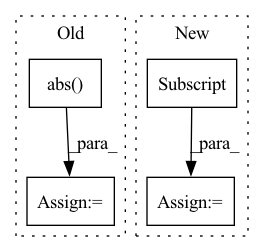

Pattern ID :12261
Before Change
metric += sklearn_metrics.mean_squared_error(y_true_los, y_pred_los)
elif metrics_strategy == "MAPE":
metric += sklearn_metrics.mean_absolute_percentage_error(y_true_los, y_pred_los)
metric += np.mean(
np.abs( y_true_outcome - y_pred_outcome)
* max_visits
* np.array(list(map(lambda x: sigma_func(x), y_true_los)))
)
if verbose:After Change
metric = []
num_records = len(y_pred_outcome)
for i in range(num_records):
cur_outcome_pred = y_pred_outcome[i]
cur_los_pred = y_pred_los[i]
cur_gt = y_true[i, :]
cur_outcome_true = cur_gt[0]
cur_los_true = cur_gt[1]In pattern: SUPERPATTERN
Frequency: 6
Non-data size: 4
Instances Fragment ID: 41566522
Project Name: yhzhu99/covid-ehr-benchmarks
Commit Name: fc9fcafdeae37b009acb4acf87682f0d86306e69
Time: 2022-06-29
Author: yhzhu99@gmail.com
File Name: app/core/evaluation/covid_metrics.py
M Class Name: AnonimousClass
N Class Name: AnonimousClass
M Method Name: multitask_los_metric(6)
N Method Name: multitask_los_metric(7)
M Parent Class:
N Parent Class:
M File Name: app/core/evaluation/covid_metrics.py
N File Name: app/core/evaluation/covid_metrics.py
M Start Line: 83
M End Line: 116
N Start Line: 119
N End Line: 142
Before Change
rel_pos = rearrange(grid, "i c -> i 1 c") - rearrange(grid, "j c -> 1 j c")
if self.log_dist:
rel_pos = torch.sign(rel_pos) * torch.log(rel_pos.abs() + 1)
self.register_buffer("rel_pos", rel_pos, persistent = False)
After Change
// now select the bias for each unique relative position combination
bias = bias[rel_dist_indices]
return rearrange(bias, "i j h -> h i j")
// helper classes
Fragment ID: 41566504
Project Name: lucidrains/make-a-video-pytorch
Commit Name: b6e0a17c5488b923d884272f7e46170352b0f0d5
Time: 2023-03-18
Author: lucidrains@gmail.com
File Name: make_a_video_pytorch/make_a_video.py
M Class Name: ContinuousPositionBias
N Class Name: ContinuousPositionBias
M Method Name: forward(1)
N Method Name: forward(1)
M Parent Class: nn.Module
N Parent Class: nn.Module
M File Name: make_a_video_pytorch/make_a_video.py
N File Name: make_a_video_pytorch/make_a_video.py
M Start Line: 110
M End Line: 126
N Start Line: 105
N End Line: 142
Before Change
Xlgmel = librosa.power_to_db(Xmel)
X_comp = torch.Tensor(np.abs( Xs) ).transpose(1, 2)
import pdb; pdb.set_trace()
// test librosa stuffAfter Change
psi_out = self.modules.psi(f_I) // generate nmf activations
// cut the length of psi
psi_out = psi_out[:, :, : X_stft_power.shape[1]]
// psi_out = psi_out.permute(0, 2, 1)
reconstructed = self.hparams.nmf(
psi_out Fragment ID: 41566511
Project Name: speechbrain/speechbrain
Commit Name: c0348188064f486d48890e95be305ffd87eb2edb
Time: 2022-11-20
Author: me@francescopaissan.it
File Name: recipes/ESC50/classification/train_interpreter.py
M Class Name: InterpreterESC50Brain
N Class Name: InterpreterESC50Brain
M Method Name: compute_forward(3)
N Method Name: compute_forward(3)
M Parent Class: sb.core.Brain
N Parent Class: sb.core.Brain
M File Name: recipes/ESC50/classification/train_interpreter.py
N File Name: recipes/ESC50/classification/train_interpreter.py
M Start Line: 107
M End Line: 131
N Start Line: 107
N End Line: 138
Before Change
// Update biased first moment estimate.
exp_avg.mul_(beta1).add_(grad, alpha=1 - beta1)
// Update the exponentially weighted infinity norm.
norm_buf = torch.cat([
exp_inf.mul_(beta2).unsqueeze(0),
grad.abs() .add_(eps).unsqueeze_(0)
], 0)
torch.amax(norm_buf, 0, keepdim=False, out=exp_inf)
After Change
beta1, beta2 = group["betas"]
eps = group["eps"]
lr = group["lr"]
weight_decay = group["weight_decay"]
for p in group["params"]:
if p.grad is None:
continue Fragment ID: 41566492
Project Name: pytorch/pytorch
Commit Name: bb245b6444d3c5b9f586d93121730390985a0bae
Time: 2021-04-15
Author: wanchaol@fb.com
File Name: torch/optim/adamax.py
M Class Name: Adamax
N Class Name: Adamax
M Method Name: step(2)
N Method Name: step(2)
M Parent Class: Optimizer
N Parent Class: Optimizer
M File Name: torch/optim/adamax.py
N File Name: torch/optim/adamax.py
M Start Line: 52
M End Line: 88
N Start Line: 53
N End Line: 96
Before Change
if per_channel:
thresholds_per_channel = np.max(np.abs(tensor_data), axis=tuple(axis_not_channel), keepdims=True)
else:
thresholds_per_channel = np.max(np.abs( tensor_data) , keepdims=True)
thresholds_per_channel = np.power(2.0, np.ceil(np.log2(thresholds_per_channel)))
tensor_for_kmeans = int_quantization_with_threshold(tensor_data, thresholds_per_channel, MULTIPLIER_N_BITS)
kmeans.fit(tensor_for_kmeans.reshape(-1, 1))After Change
kmeans = KMeans(n_clusters=n_clusters)
threshold_selection_tensor = symmetric_selection_tensor if is_symmetric else power_of_two_selection_tensor
thresholds_per_channel = threshold_selection_tensor(tensor_data, p, n_bits, per_channel,
channel_axis, n_iter, min_threshold,
qc.QuantizationErrorMethod.NOCLIPPING)[THRESHOLD]
tensor_for_kmeans = int_quantization_with_threshold(tensor_data, thresholds_per_channel, MULTIPLIER_N_BITS)
kmeans.fit(tensor_for_kmeans.reshape(-1, 1))
Fragment ID: 41566508
Project Name: sony/model_optimization
Commit Name: 6684273eb930b681f8316af3d81d8e8903e48f67
Time: 2022-12-15
Author: 78862769+elad-c@users.noreply.github.com
File Name: model_compression_toolkit/core/common/quantization/quantization_params_generation/lut_kmeans_params.py
M Class Name: AnonimousClass
N Class Name: AnonimousClass
M Method Name: lut_kmeans_tensor(9)
N Method Name: lut_kmeans_tensor(8)
M Parent Class:
N Parent Class:
M File Name: model_compression_toolkit/core/common/quantization/quantization_params_generation/lut_kmeans_params.py
N File Name: model_compression_toolkit/core/common/quantization/quantization_params_generation/lut_kmeans_params.py
M Start Line: 63
M End Line: 69
N Start Line: 40
N End Line: 74
Before Change
k = min(k, len(num_col_names))
num_data = df[num_col_names]
num_data = num_data.fillna(0)
abs_corr = num_data.corr()[target].abs()
top_k = abs_corr.sort_values(ascending = False)[1:k].index.values.tolist()
return top_k
After Change
else:
select_model = SelectKBest(mutual_info_classif, k=k)
X = df[num_col_names]
y = df[target]
slect_feature_cols = select_model.fit(X, y).get_feature_names_out()
return slect_feature_cols
Fragment ID: 41566509
Project Name: jianzhnie/autotabular
Commit Name: c04a58c146a58c659d5df8dc70a02ba8ed007f18
Time: 2021-10-15
Author: jianzhnie@126.com
File Name: autofe/feature_engineering/groupby.py
M Class Name: AnonimousClass
N Class Name: AnonimousClass
M Method Name: get_candidate_numerical_feature(3)
N Method Name: get_candidate_numerical_feature(3)
M Parent Class:
N Parent Class:
M File Name: autofe/feature_engineering/groupby.py
N File Name: autofe/feature_engineering/groupby.py
M Start Line: 20
M End Line: 27
N Start Line: 25
N End Line: 32